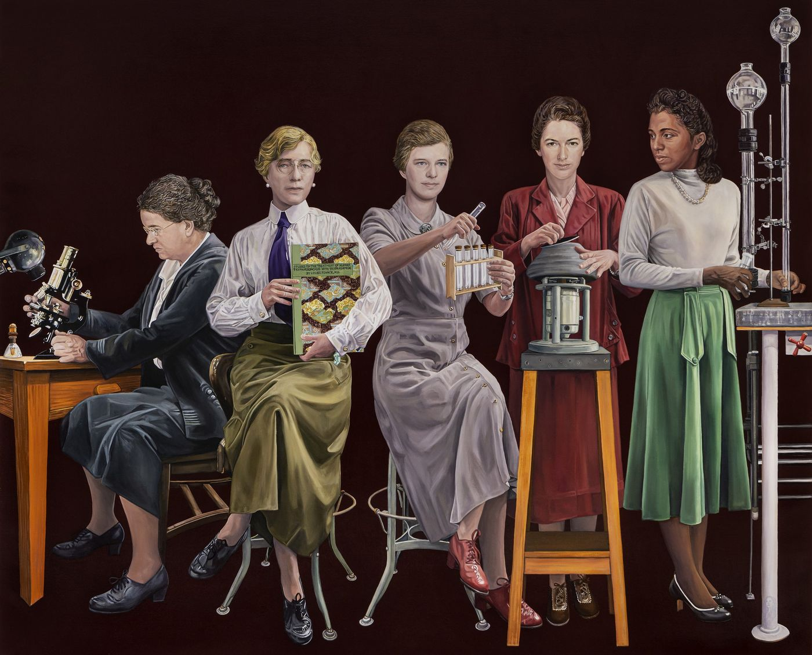

English · Bac pro B1 to B2 · C1 · My Working Day
Women at Work
Who gets the credit, who gets the pay?
Attendus
Theme. Women at work: recognition, promotion and equal pay, from NASA Langley to Dagenham and the Lionesses.
Level. English · Bac pro B1 to B2 · C1 (Hidden Figures with differentiated B1 / B2 / C1 tasks).
Key question. Who gets the credit, who gets the pay?
Objectives. Read film and history; compare fact and fiction; argue about discrimination, promotion and equal pay at work.
Cultural anchor. Zlamany’s Rockefeller women scientists; Hidden Figures and NASA Langley; Made in Dagenham and the Equal Pay Act; the Lionesses; the nurses and midwives of Poplar.
- 01 Hidden Figures Katherine Johnson, Dorothy Vaughan and Mary Jackson at NASA Langley. B1 · B2 · C1. Hidden Figures, Theodore Melfi, 2016, affiche du film. © 20th Century Fox.
-
 02
Same Job, Same Pay?
From Made in Dagenham to the Lionesses. Terminale bac pro.
J. Howard Miller, We Can Do It!, 1943, produced by Westinghouse for the War Production Co-ordinating Committee. National Museum of American History, Smithsonian Institution / U.S. National Archives (NARA 535413 / 44-PA-88). Public domain, via Wikimedia Commons.
02
Same Job, Same Pay?
From Made in Dagenham to the Lionesses. Terminale bac pro.
J. Howard Miller, We Can Do It!, 1943, produced by Westinghouse for the War Production Co-ordinating Committee. National Museum of American History, Smithsonian Institution / U.S. National Archives (NARA 535413 / 44-PA-88). Public domain, via Wikimedia Commons.
- 03 Women at Work in Post-War London Call the Midwife. Nurses and midwives in Poplar, from the Blitz to the NHS. Bac pro ASSP · Première ST2S. Portrait of a nurse, Poplar, East London. (A fuller credit is still missing.)